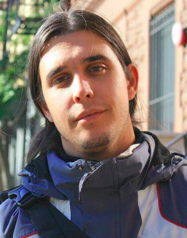
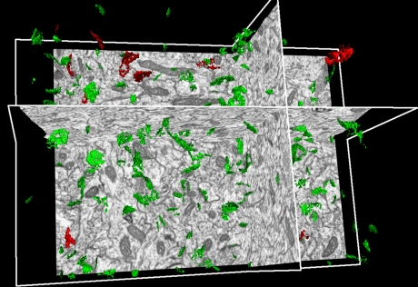
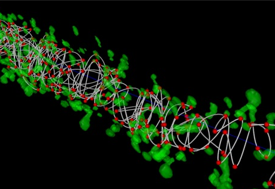
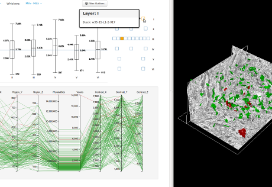

Juan Morales is a Phd candidate in the CeSViMa, (Centro de Supercomputación y Visualización de Madrid), in the UPM (Universidad Poltéctina de Madrid).
All of his research is related and supported by the Cajal Blue Brain Project
Download my resume (pdf)
Interesed in: Infovis, Visual Analytics, Human Computer Interaction, Neuroscience, Image Analysis...
All the research has been driven by user's needs (user centered designed), so the outcomes are usually software tools that fulfills the requirements of the neuroscience community.



Juan Morales del Olmo. New interactive techniques for data analysis in Neuroscience. PhD thesis, Facultad de Informatica, Universidad Politécnica de Madrid, 2013. [ http ]
Megan Monroe, Rongjian Lan, Juan Morales del Olmo, Ben Shneiderman, Catherine Plaisant, and Jeff Millstein. The challenges of specifying intervals and absences in temporal queries: a graphical language approach. In Proceedings of the SIGCHI Conference on Human Factors in Computing Systems, CHI '13, pages 2349-2358, New York, NY, USA, 2013. ACM. [ DOI | http ]
Juan Morales, Angel Rodriguez, José-Rodrigo Rodriguez, Javier DeFelipe, and Angel Merchan-Perez. Characterization and extraction of the synaptic apposition surface for synaptic geometry analysis. Frontiers in Neuroanatomy, 7(20), 2013. [ DOI | http ]
Juan Morales, Ruth Benavides-Piccione, Angel Rodríguez, Luis Pastor, Rafael Yuste, and Javier DeFelipe. Three-dimensional analysis of spiny dendrites using straightening and unrolling transforms. Neuroinformatics, 10(4):391-407, 2012. [ DOI | http ]
Juan Morales, Angel Rodríguez, Angel Merchán-Pérez, José-Rodrigo Rodríguez, and Javier DeFelipe. Characterizing and extracting the synaptic apposition surface for the analysis of synaptic geometry. In 5th Workshop on Data Mining in Functional Genomics and Proteomics: current trends and future directions, pages 63-72, Athens, Sep 2011.
Juan Morales, Jorge G. Peña, Jaime Fernández, and Angel Rodríguez. Towards a scalable espina for neuroscience data analysis. ASME Conference Proceedings, 2011(44328):357-366, 2011. [ DOI | http ]
Juan Morales, Lidia Alonso-Nanclares, José-Rodrigo Rodríguez, Angel Merchán-Pérez, Angel Rodríguez, and Javier DeFelipe. Fast interactive quantification of synapses in the cerebral cortex. International Journal of Artificial Intelligence Tools, 20(12):239-252, Apr 2011. [ DOI ]
Juan Morales, Lidia Alonso-Nanclares, José-Rodrigo Rodríguez, Javier DeFelipe, Angel Rodríguez, and Angel Merchán-Pérez. Espina: a tool for the automated segmentation and counting of synapses in large stacks of electron microscopy images. Frontiers in Neuroanatomy, 5(18):1-8, Mar 2011. [ DOI ]
Juan Morales, Lidia Alonso-Nanclares, José-Rodrigo Rodríguez, Angel Merchán-Pérez, Angel Rodríguez, and Javier DeFelipe. Computer assisted identification, segmentation and quantification of synapses in the cerebral cortex, volume 6098, published from proc. of iea/aie conference Trends in Applied Intelligent Systems, pages 112-118. Springer, Córdoba, Spain, 2010. Selected to be extended and publish in a special issue of JCR Journal (ref. [7]).